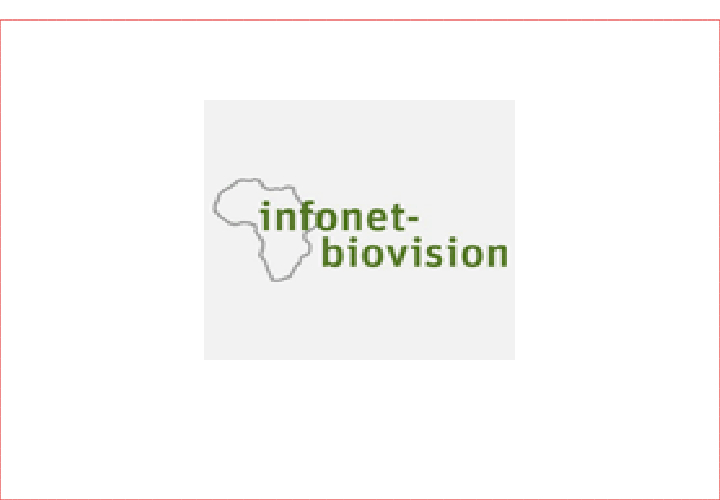

English Wiktionary
Wikipedia for Schools is a selection of articles from Wikipedia produced by international children's charity SOS Children and most recently updated in 2013.
English Wiktionary
Wikipedia
Wikipedia for Schools is a selection of articles from Wikipedia produced by international children's charity SOS Children and most recently updated in 2013.
Wikipedia
Edutech Wiki
Edutech Wiki for Schools is a selection of articles from Wikipedia produced by international children's charity SOS Children and most recently updated in 2013.
Edutech

Infonet-biovision
aims to strenghten sustainable development of farmers and rural communities in Africa by making information on key topics available through an online library and an offline version on CD. We support a wide range of audience including farmers, extension practitioners, students and researchers to access relevant, scientifically proven and practical information on sustainable agriculture, livestock, health and environmental conservation issues.
Infonet-biovision